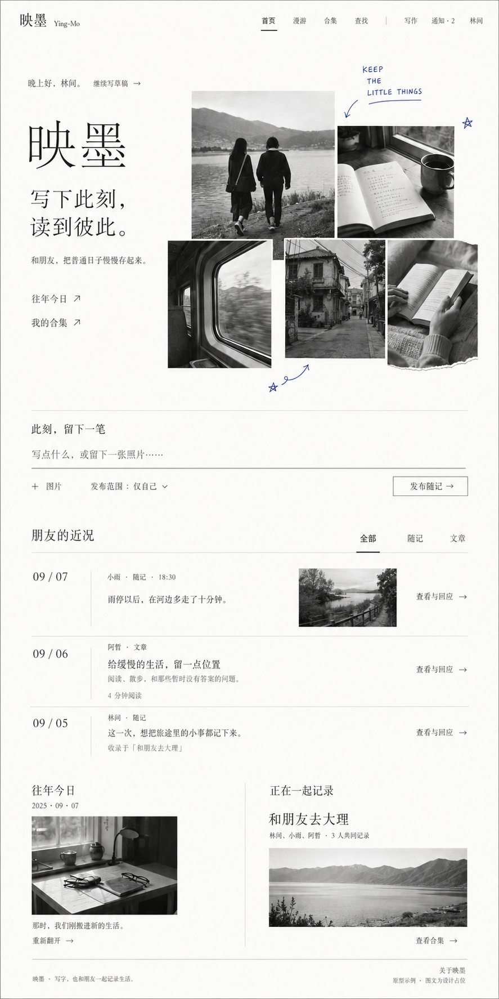
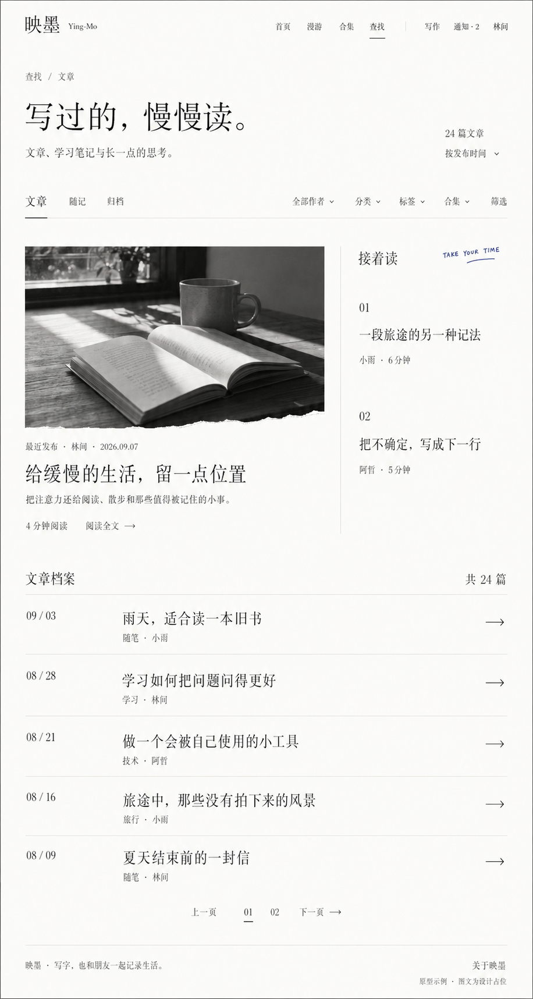
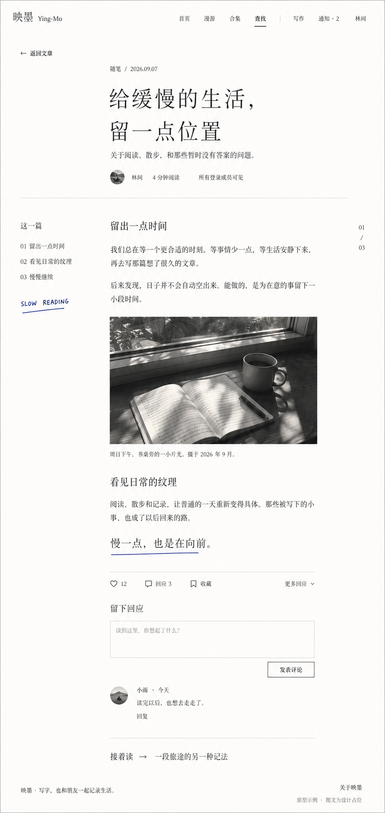
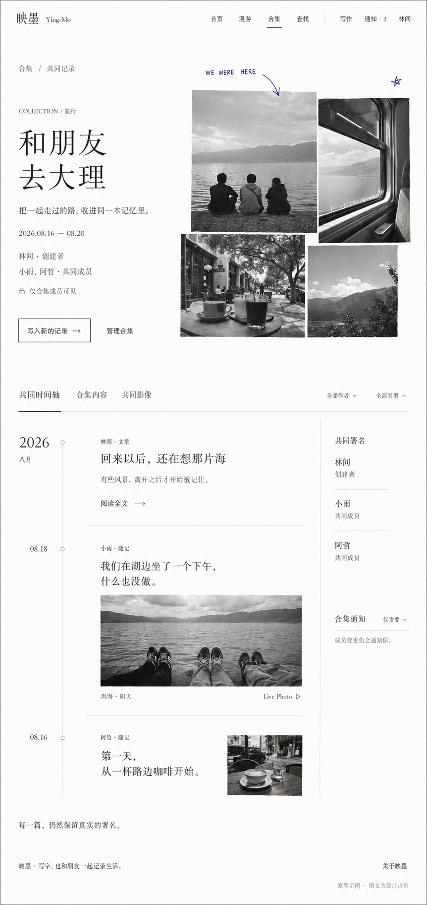
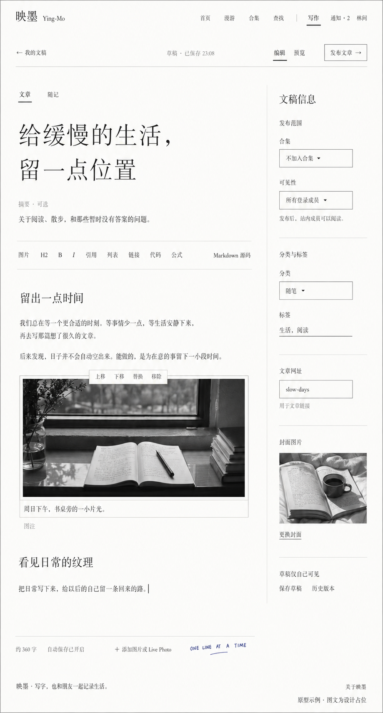

01 / 首页
黑白拼贴与快速随记，往下衔接朋友动态、往年今日和共同记录。

02 / 文章列表
缩短刊首介绍，以主文章、延伸阅读和清晰目录组织内容。

03 / 文章阅读
用限宽正文、侧边目录和轻量评论入口支持持续阅读。

04 / 合集详情
以成员权限、真实署名和共同时间轴组织一段经历。

05 / 写作页
安静的正文画布，集中显示自动保存、图片设置和发布范围。

首批五页原型 / V1 · 桌面全页构图
使用内置 ImageGen 生成，图文均为设计占位。点击原图可查看实际输出尺寸。
黑白拼贴与快速随记，往下衔接朋友动态、往年今日和共同记录。

缩短刊首介绍，以主文章、延伸阅读和清晰目录组织内容。

用限宽正文、侧边目录和轻量评论入口支持持续阅读。

以成员权限、真实署名和共同时间轴组织一段经历。

安静的正文画布，集中显示自动保存、图片设置和发布范围。
